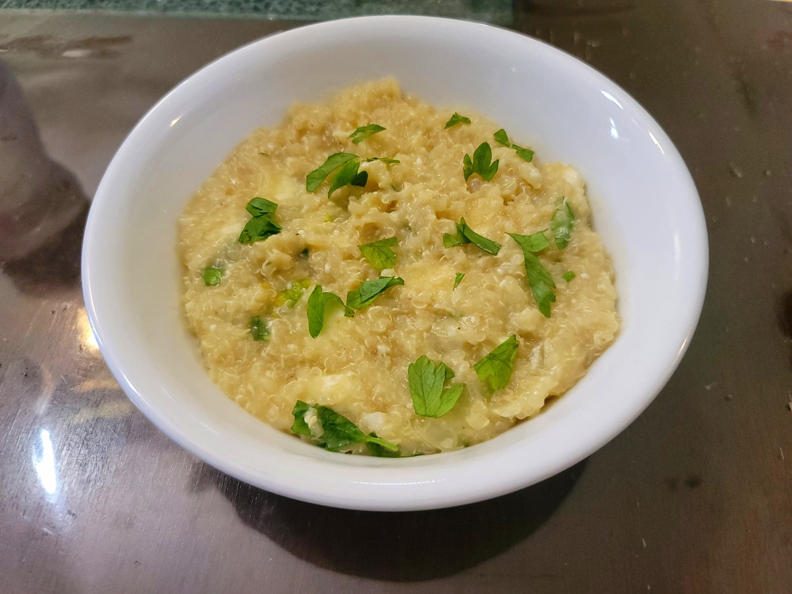

Quinoa Atamalada

Ingredients:
- 1 cup Quinoa
- 1 tbsp Canola oil
- 1/2 Onion, diced
- 2 cloves Garlic, minced
- 2-3 tsp Ají Amarillo paste
- 4 cups Water
- Salt, to taste
- Black pepper, to taste
- 1/4 cup Evaporated milk
- 1/2 cup (8 oz) Queso fresco, cubed
- 2 tbsp Parsley, chopped
Instructions:
- In a large saucepan, heat the oil over medium heat. Add in the onion, garlic, and ají amarillo paste and sauté until the onion becomes translucent.
- Stir in the quinoa and then cover with the water. Bring to a boil and then reduce to a simmer. Cook, stirring occasionally, for about 30 minutes. Add more water if needed while cooking; it should be the consistency of a porridge or a thick soup.
- Add salt and pepper to taste. Then stir in the milk, cheese, and parsley. Serve immediately.